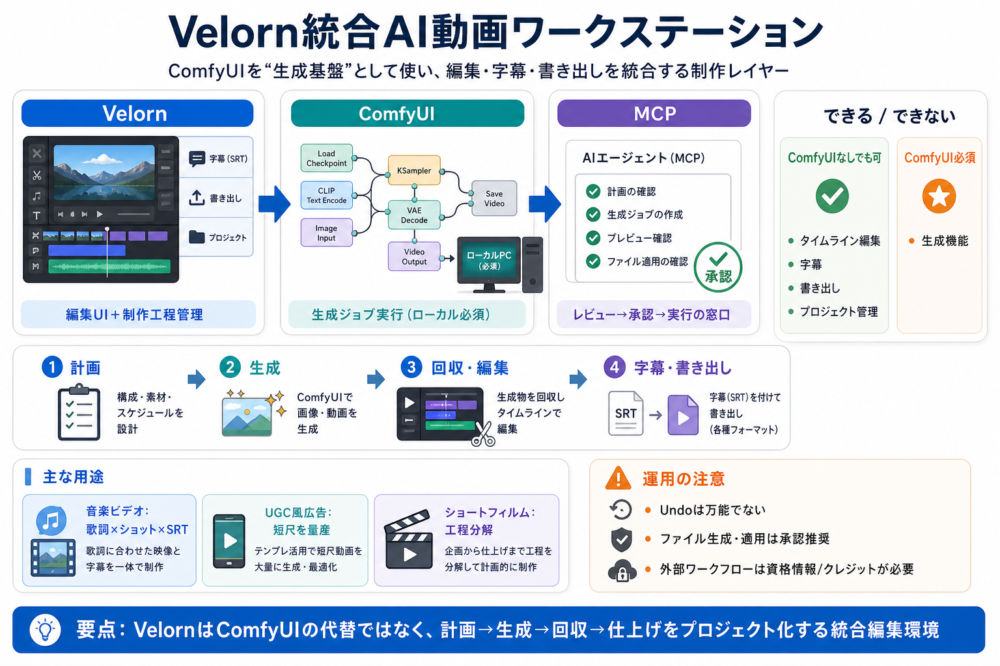

ComfyUI Installation Guide (2026) | Video \Text by AInMinutes on DeviantArt
ComfyUI is an open-source, node-based interface that allows you to generate and modify images and videos. It uses open-w…

Velornは、ローカルのComfyUIを生成基盤に据え、タイムライン編集・字幕・書き出し・プロジェクト管理まで“制作レイヤー”として統合するデスクトップアプリです。
VelornはComfyUIの代替ではなく、ComfyUIの生成ジョブを計画して投入し、成果物を受け取ってタイムラインへ仕上げます。
制作は、Velorn（編集・管理）—ComfyUI（生成）—MCP（エージェントの作業窓口）に分かれて動きます。
Custom Workflowsにより、ComfyUIのワークフローをVelornの生成フローへ持ち込み、プロジェクトの一部として実行できます。
作りたい成果物に合わせて、指示から生成し、タイムラインで編集し、字幕と書き出しまで仕上げます。
歌詞のタイミング、ASR転写（SRT字幕）、キャスト設定、ショットごとの編集可能な要素をプロジェクト化します。
UGC風クリエイター広告やビジネス広告、β寄りのショートフィルム向けに“工程分解された指示”が用意されています。
Velornは100以上のMCPツールを備え、エージェントがプロジェクトを検査して不足を案内し、承認を前提に生成や適用へ進めます。
編集自体はComfyUIなしでも使えますが、現行の“生成”はローカルComfyUIが別途必要です。
READMEでは、クラウド/パートナーのワークフロー（例：Nano Banana 2、GPT Image 2、Seedance、Kling等）も挙げられます。
タイムライン編集はUndoに参加し得ますが、imports/exports/ファイル生成/プロジェクト作成などは完全なUndo対象ではありません。
Velornの核心は「編集UI＋制作工程管理」へComfyUIを組み込み、MCPでレビュー/承認を挟んで生成をプロジェクト化することです。
ComfyUI is an open-source, node-based interface that allows you to generate and modify images and videos. It uses open-w…
Velorn includes a local MCP server with 100+ tools for Codex, Claude Code, Cursor-compatible tools, and other MCP client…
Comfy UI on your computer, the simplest way is to head over to the official website, comfy.org, click download comfy UI,…
you would like to take that route. All right, so let's walk through how to actually install ComfyUI. So, first things fi…
get started with one of the templates or basically whatever you want to do. So, if you have the CPU installation, it sho…